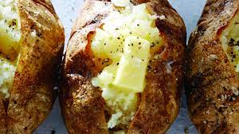

Baked Potato
back to Homepage

Description
The perfect and simple baked potato recipe with a crispy outside, a soft fluffy inside, and an overall delicious dish!
Preparation: 10 mins Cook Time: 40 mins Total Time: 1 hr Servings: 1 potato per person
Ingredients
- Russet potatoes
- Butter or Olive Oil
- Salt
- Freshly-Ground Black Pepper
Steps
- Pre-Heat oven to 450°F
- Prepare your backing sheet for the potatoes to sit on
- Poke the potatoes to prevent losing potatoes whiles it is being baked
- Bake the potatoes in the oven for about 25 minutes
- Take out the potatoes to brush them with butter/oil
- Put the potates back in the oven for about 20 more minutes until the insides are soft
- Serve with pepper, salt, and any more seasoning of your choice!